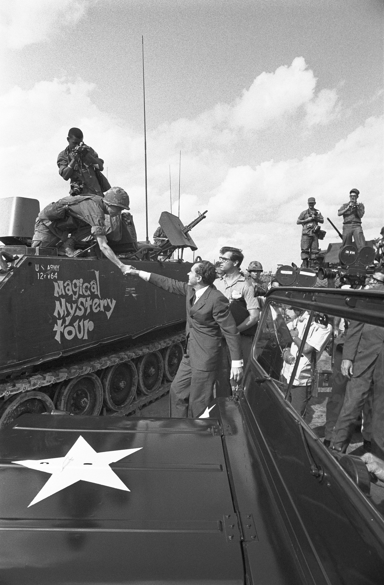

First Indochina War (1946-1954)
The Vietnam War began in the fight for Vietnamese independence from French colonial rule. The first Indochina War ended with the Geneva agreements in 1954, which caused Vietnam to be divided along the 17th parallel into North and South of Vietnam.

Geneva Accords 1954
The agreements they made in Vietnam temporarily divided this country into two parts, the 17th parallel with the northern government led by the communist Ho Chi Minh and the south led by the anti-communist Ngo Dinh Diem government.

Diem's Government 1955-1963
The leader of the anti-communist southern section Ngo Dinh Diem faced internal opposition and people criticizing him for his policies. The United States supported this government with military and economic assistance.

Gulf of Tonkin Incident 1964
The Tonkin Gulf Incident involved attacks on U.S. Military service ships by North Vietnamese. This directed to the Tonkin Gulf resolution given by President Lyndon B. Johnson, one of the authorities for using military force in Vietnam.

Operation Rolling Thunder 1965-1968
This campaign supported by United States firefighters had the objective of get rid of the infrastructure and morale of North Vietnam, this had limited success.

Tet Offensive 1968
The North Vietnamese made a surprise attack during the Lunar New Year holiday. However, the American and South Vietnamese forces defended themselves, this had an important impact on public opinion in the United States, which had a greater influence on feeling about the war.

My Lai Massacre 1968
American battalions killed hundreds of unarmed South Vietnamese people, including women, children, and elders from the My Lai village. This incident became a symbol of the inhuman treatment of war.

Operation Rolling Thunder 1965-1968
President Richard Nixon made a policy of Vietnamization, gradually pulling away US troops while increasing the combat capacity of South Vietnamese forces.

Paris Peace Accords 1973
The United States, North Vietnam, South Vietnam and Viet Cong made and signed an agreement to end the war. The U.S. troops retreated, and the 17th parallel remained, being the border between North and South Vietnam.

Fall of Saigon 1975
North Vietnamese forces captured Saigon, marking the end of the war. Vietnam took refuge under communist control and the country became the Socialist Republic of Vietnam.